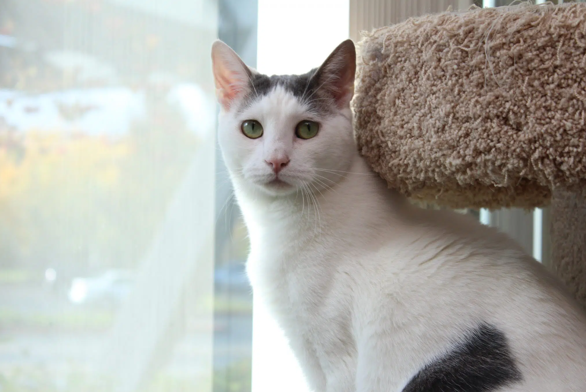

Keeping pets healthy, happy, and with loving families.
We believe everyone can benefit from the unconditional love and acceptance of dogs and cats. That’s why our mission is People Rescuing Animals … Animals Rescuing People®. We offer innovative programs strengthening the human-animal bond throughout the community.
We offer a number of free services to support Veterans: free adoptions, pet vaccine and wellness clinics, emotional support animals, and service dog placement and training.
Train for a lifetime of happiness with your pet through our classes and workshops. Our skilled instructors provide a fun, positive environment to connect with your pet.
Looking for assistance or advice during difficult times? Explore all of the options we have to offer and contact us for help and resources on a wide variety of pet topics.
Need affordable medical care for your dog or cat? Discover the non-emergency services our clinic offers to the public and how to qualify for discounted rates.
Our compassionate and skilled veterinarians and technicians utilize state-of-the-art equipment to sterilize thousands of dogs and cats each year using the highest standards of care.
Sometimes, unfortunate circumstances arise. If you can locate a new home on your own, you will create a smoother transition for your pet.